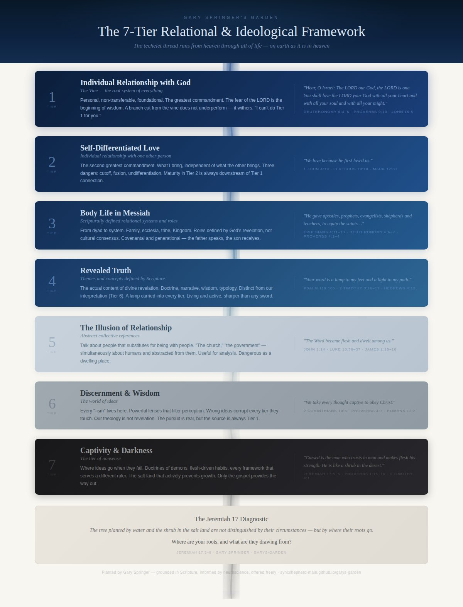

Gary Springer's Garden
7-Tier Framework
Recovery Model
Biblical Roots
Immanuel Moments
Reading List
Saplings ▾
ACEs Layer Proposal
At Three Miles Per Hour
Clarity AI
Relaxing in the Run
Roots Exposed
The Best Wine
The Gardener Does Not Uproot
The Songs I Chose

The 7-Tier Relational & Ideological Framework — click image to view full size.
See the
interactive version
or read the
full text
.